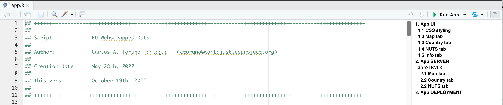

# Required packages
library(pacman)
# Development version
p_load_gh(char = c(
# Visualizations
"xl0418/ggradar2", "davidsjoberg/ggsankey",
dependencies = T
))
# Stable CRAN release
p_load(char = c(
# Visualizations
"showtext", "ggtext", "ggsankey", "ggrepel", "ggplotify", "gridExtra", "ggradar2",
"patchwork",
# Data Loading
"haven", "readxl",
# Other
"margins",
# Good 'ol Tidyverse
"tidyverse"
))2 Coding
In this chapter, we will cover some basic guidelines and styling rules related to how the coding is done at the DAU-WJP. When programming data analysis routines, it is very hard to vanquish the personal style that every person has. Therefore, this chapter is focused on giving general guidelines that will allow to standardize their codes for an easy collaboration among all team members.
Remember, when writing a code, you are just the author not the audience. Therefore, think on how would other people understand what you are writing without the ideas and knowledge you have at the moment of creating your code. Writing comments, using titles as step-by-step guides, documenting the issues, all of these actions will greatly help other team members to understand what you have done and why you have done it. Also, this will help you in the future to understand what you did in the past and reduce the level of dependency of a given project on its collaborators.
2.1 Script Headline and Outline
The headline is very important because it gives the general information about the script, its purposes, the authors, the program version, among other important details. Within the DAU, we have the following template:
## ++++++++++++++++++++++++++++++++++++++++++++++++++++++++++++++++++++++++++++++++++++++++++++++++++++++++++
##
## Script: PROJECT NAME - Script Purpose
##
## Author: Author 1 Name (email)
## Author 2 Name (email)
##
## Creation date: Month Day, Year
##
## This version: Month Day, Year
##
## ++++++++++++++++++++++++++++++++++++++++++++++++++++++++++++++++++++++++++++++++++++++++++++++++++++++++++As you can see, the template highlights the most important information that we need to know when opening a script. This information should give any team member a general idea on the project status even if this person has never collaborated in the project before. However, this is just a first step in the process. Our template goes beyond and it also displays how to use Titles, Subtitles and Steps within the script:
## ++++++++++++++++++++++++++++++++++++++++++++++++++++++++++++++++++++++++++++++++++++++++++++++++++++++++++
##
# 1. TITLE ----
##
## ++++++++++++++++++++++++++++++++++++++++++++++++++++++++++++++++++++++++++++++++++++++++++++++++++++++++++
## 1.1 SUBTITLE ============================================================================================
# Step 1
# Step 2
## 1.2 SUBTITLE ============================================================================================
# Step 1
# Step 2Unlike the Headline seen above, the use of this outline to structure your code will vary from script to script. For example, if you are working on a very short routine of less than 100 lines. You might not need to use titles and subtitles and you would rather choose to only use steps. Therefore, the extent to which this outline is feasible will be a decision of the code administrator.
The main objective of this outline is to provide an organized outline for the script. The utility of this outline increase with the complexity of the code. Although we strongly advice you to avoid very long routines (we will come back to this when we talk about refactoring and modules), we understand that sometimes the code might be very complex by nature. As an example, look at the following script from the Shiny App that we prepared for the EU Project. Even though the code extends for less than 500 lines, it is difficult to read due to the reactivity and laziness concepts that come along when programming a Shiny App.

2.2 Loading Packages
On any routine, the first thing is to load the packages that you will be using in the code. Usually, you will see routines calling the library or request modules to load the needed packages. However, given that this is a team collaboration, not everyone have these packages installed or, even if they have it, the script requires a certain version of the package in order to run. Therefore, we need to, not only load, but also check for these other requirements as well.
W=To achieve this, we could write down a series of if conditions. However, we choose to rely on the pacman package to do this. As such, we only request that every team member has this package installed in their local machine. If every team member has it installed, it is quite easy to load the required libraries by calling the p_load function. Take a look at the following example:
Three things are worth noticing. First, if some packages require the development version, we use the p_load_gh to install their latest release from GitHub. Second, we always install the development releases first and then the stable CRAN version at last. This is done in order to leave the tidyverse for last and avoid any other package to mask over the tidyverse functions. Third, for very complex routines, we might need to load several packages, it is strongly recommended to comment on the utility and need for each package so all team members can have a general idea on their use before reading the respective documentation.
2.3 Coding Style
2.3.1 The Tidyverse Style guide
In the DAU, we strongly rely on the guidelines defined by Hadley Wickham in its Tidyverse Style Guide. We request that every DAU member read this style guide before collaborating with other team members in a given project. As stated in the first page of the guide:
Good coding style is like correct punctuation: you can manage without it, butitsuremakesthingseasiertoread.
This guide is, as its name suggest, just a guide. As such, some of its guidelines might not be consistent with the coding style that the DAU as a whole have. Therefore, we do not rely on the use of styler and lintr packages to style our codes. In what follows, we will highlight some topics and also complement with some of our own style guidelines the aforementioned reference.